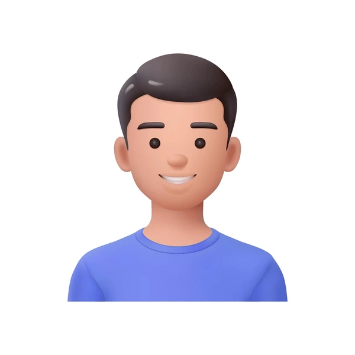

I am a 21 years old Nepali 外人, currently studying IT design in Beautiful city Tokyo Japan casing my dream to become a great graphic designer. I was born and raised in a rural place of Nepal. There was no internet, no transportation and no market nearby. My parents worked as a teacher at a government school. From that, they raised me and my lovely sister. I was an average guy at study and very weak at sport. But what I am good at was the art and technology. As my father was a computer teacher, I got exposure to tech very earlier than other.